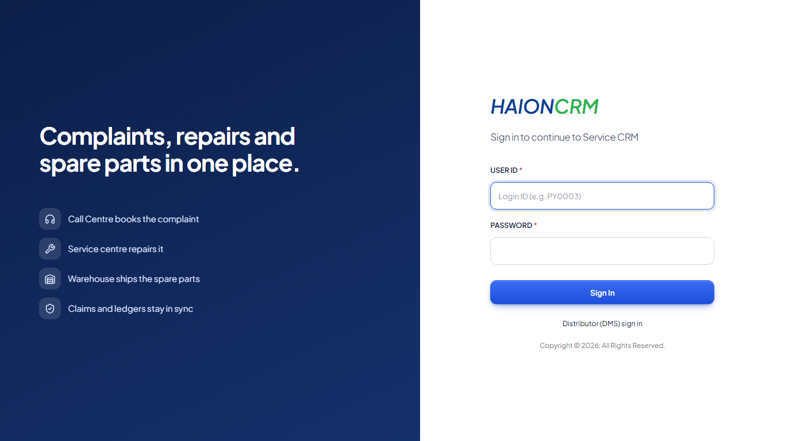
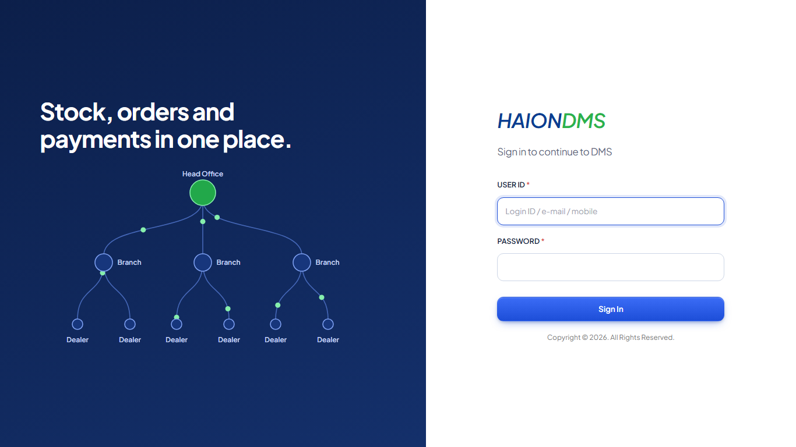
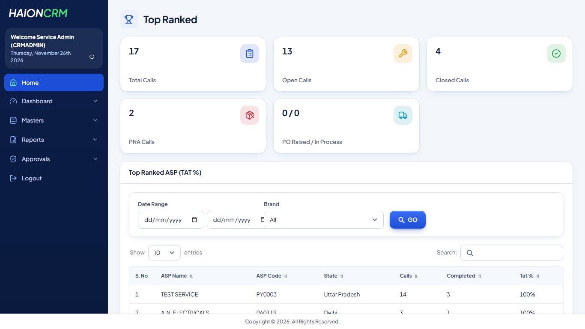
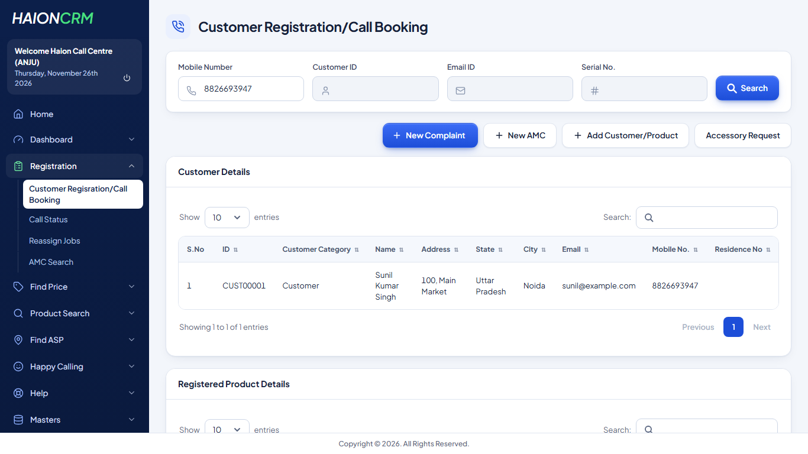
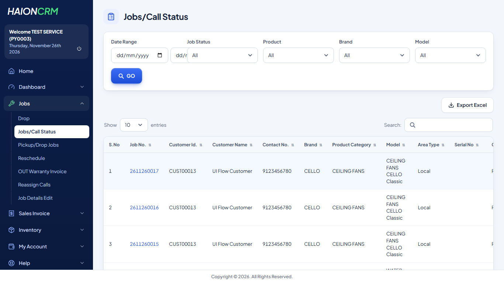
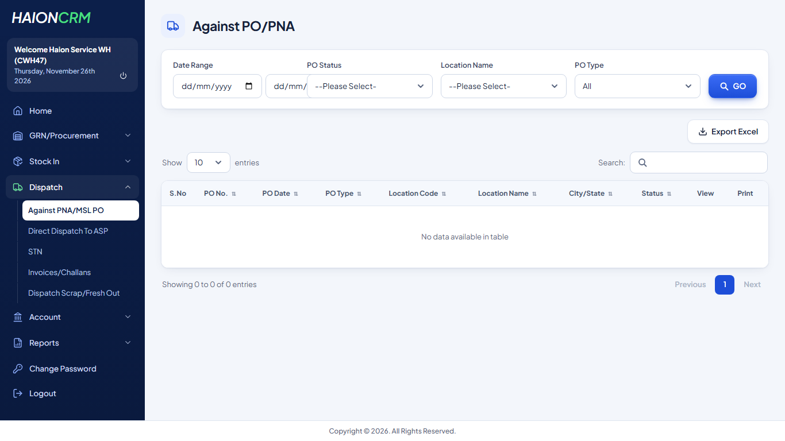
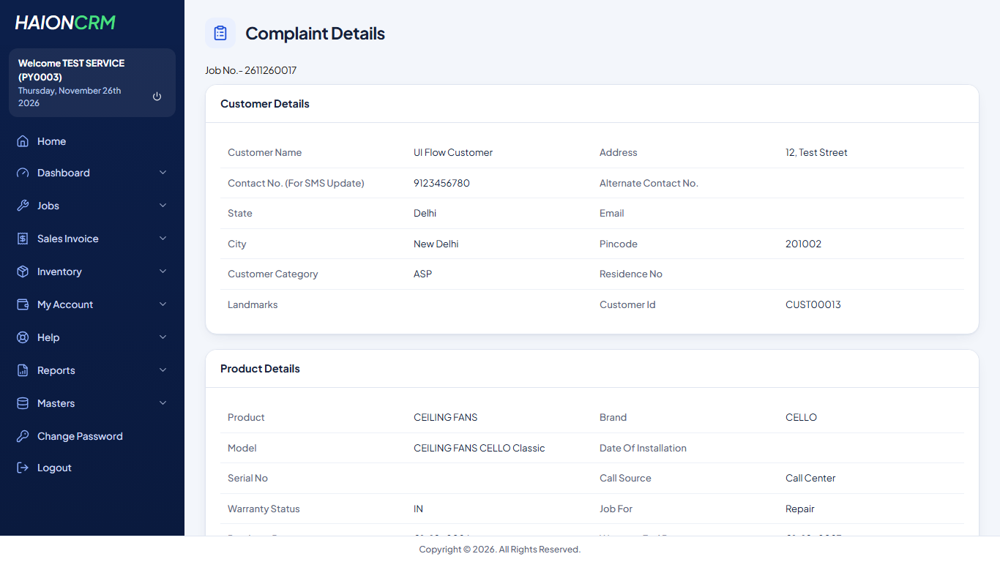
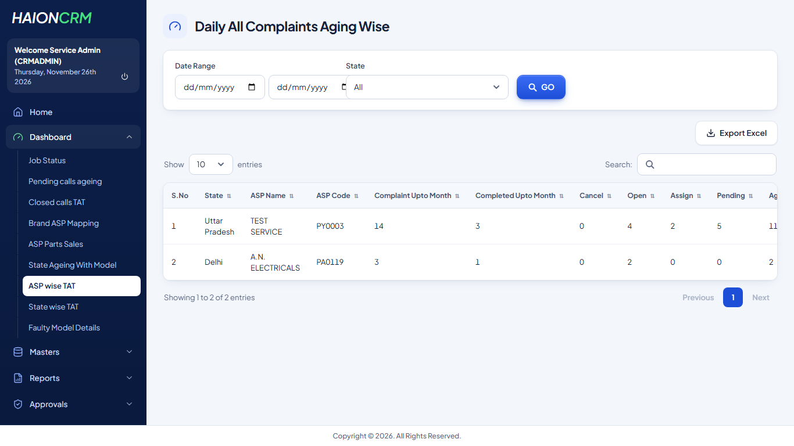
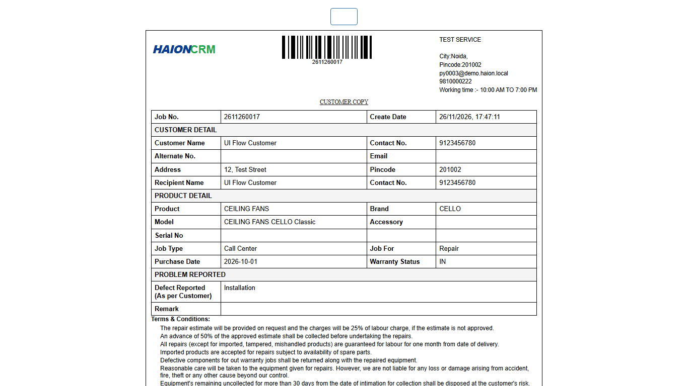

Version: {{DATE}} · Web addresses: /distributor (DMS) and /distributor/service (Service CRM)
HAION is one web application with two connected panels that share the same sign-in and the same master data:
| Panel | What it is for | Who uses it |
|---|---|---|
Distributor (DMS)/distributor | Selling the product through the channel: purchase orders, approvals, invoices, dispatch, stock receipt with serial numbers, returns, payments, party ledgers, sales force (beats, leads), HRMS and reports. | Admin, Head Office, Branches, Distributors / Dealers, sales staff |
Service CRM/distributor/service | After-sales service: registering customer complaints, warranty check, sending the job to a service centre (ASP), engineer visits and repair, spare-part supply from the warehouse, returning faulty parts, customer confirmation, claims and ledgers. | Admin, Call Centre, ASP (service centre), WH (warehouse) |
/api/dms, Service CRM API at /api/service-crm. Every screen talks only to these APIs; every action is checked on the server for the user's role and location.

| Role | Sees and does | Cannot |
|---|---|---|
| Admin | Everything: dashboards, all masters, all reports, approvals (requests, vendor PO, claims, invoice cancel, job status change, PO cancel, stock adjustment). | — |
| Call Centre | Registers customers and complaints, AMC and accessory requests; follows call status; reassigns jobs rejected by an ASP; happy calling (customer feedback); part / product / ASP search; own field users. | Acknowledge or repair jobs; assign engineers. |
| ASP (service centre) | Only the jobs assigned to its own location: acknowledge, visit schedule, engineer assignment, repair, PNA, estimates, approval requests, call confirmation, pickup/drop; its own spare stock, POs, stock in, engineer stock, faulty returns, retail invoices, expenses, payments, ledgers and reports; its engineers / pickup / delivery users. | See other ASPs' jobs; create Admin users; reassign a job to another ASP. |
| WH (warehouse) | Vendor purchase (PO, gate entry, GRN), local GRN, dispatch against ASP PNA/MSL POs, STN, direct dispatch, receiving faulty parts and returns, payment receive, CN, account transfer/adjustment, reconciliation, stock adjustment, warehouse reports. | Touch jobs. |
| Field staff (Engineer, Pickup Boy, Delivery boy, Coordinator) | Created by the ASP. They are assigned to jobs and hold engineer stock. | Open the web panel (they use the engineer app). |
DMS users are tied to a location type — Head Office, Branch, Super Stockist, Distributor, Dealer, Retailer — and to page rights set by the Admin in Admin/Users → Update Rights (view / add / edit / approve per page) plus brand and region scopes. A dealer, for example, can raise POs and receive stock but cannot open Master Management even by typing the address.
The DMS home shows sale, purchase, PO, collection, inventory and outstanding tiles with monthly charts; every tile opens its report.
| Menu | Main screens |
|---|---|
| Dashboard | Dashboard 1 & 2, Inventory, Lead, Purchase, Sale, Account |
| Master Management | Admin/Users (rights, history), Brand, City, Color, Coupon, Courier, Customer, Location, Other Tax, Parameter, Price, Product Category / Sub Category / Master / Delivery / Image, Scheme, Serial No. Activation, Specification, State, Tax, Vendor |
| Report Master | Beat, Collection, Inventory, Inventory Aging, ISD, Party Ledger, Party Master, Payment, Price Drop, Purchase Order, Return, Sale, Serial No. Activation, Stock Ledger, Vendor Purchase |
| Logistic / Invoicing | Update Dispatch; Corporate and Retail invoices, serial-number tracking, STN distribution, stock transfer (+ approval, job work) |
| Purchase / Return | Local Purchase, Opening, PO, PO Approval, Vendor; Customer Return, Purchase Return, Return Approval, Vendor Return |
| Payment / Receive Stock | Account Adjustment, Payment Approval, Payment Receive; Receive From Location (scan serials against the invoice), Received from Jobwork |
| Sale Force / Query / App | Beat Scheduler, Deviation Approval, Lead, My Beat Plan, PJP, Quote, Target, Expenses; Query Status; App Feedback, Task, Track Location, Attendance, TA/DA |
| HRMS | Employees, departments, designations, attendance, leave, claims, salary sheet and slips, policies, notices, resignations |

| Menu | Screens |
|---|---|
| Dashboard | Job Status, Pending calls ageing, Closed calls TAT, Brand ASP Mapping, ASP Parts Sales, State Ageing With Model, ASP wise TAT, State wise TAT, Faulty Model Details |
| Masters | Admin Users, City, Product, Brand, Purchase From, Location, Model, Partcode, State, VOC, Repair Action, HSN Tax, Supplier, Add Software, Notice, Job Search, Claim, Holiday, Create Pincode, Fault, Feedback, Pending Reason, Account Head, Account Section, Voucher, Bank Account |
| Reports | All Job, Part Consumption, PO/PNA, Sales/Dispatch, Party Account Status, Stock Details, Sales Return, Stock Movement, Profit and Loss, Part Price List, ASC Location, Expense |
| Approvals | ASP Claim Approval, Labour / Travel / Partner Claim Generate, ASP Claim Invoice, Vendor PO Approval, Request Approval, Invoice cancel, Job status change, Pending PO Cancel, Stock Adjustment |
Important masters and what they drive:

Menus: Dashboard (Call Details), Registration (Call Booking, Call Status, Reassign Jobs, AMC Search), Find Price (Part search), Product Search, Find ASP, Happy Calling, Help (Notice), Masters (Users), Change Password.

Menus: Dashboard (Call Details — engineer-wise calls, PO summary), Jobs (Drop, Jobs/Call Status, Pickup/Drop Jobs, Reschedule, OUT Warranty Invoice, Reassign Calls, Job Details Edit), Sales Invoice (Invoice, Invoice Status), Inventory (Stock, Purchase Order, PNA bucket, Stock In, Engineer Stock, Purchase Return, Faulty/P2C Bin, Faulty Spare Dispatched, Stock Issue To Engineer, Engineer Spare Demand, Faulty Return From Engineer), My Account (Expense, Add Payment, Account Status, Party Ledger), Help, Reports, Masters (My Profile, User List, Users Master).

Menus: GRN/Procurement (Local, PO To Vendor), Stock In (Faulty/Sales Return, Pending for Gate Entry, GRN, GRN Status), Dispatch (Against PNA/MSL PO, Direct Dispatch To ASP, STN, Invoices/Challans, Dispatch Scrap/Fresh Out), Account (Payment Receive, CN Generate, Party Ledger, Transfer to Security A/C, Account Adjustment, Request For Reconciliation, Stock Adjustment), Reports (Stock, Sale, Pending PO/Indents, Sale Return, GRN Details, Tag No Details, Part Price List, Faulty Pending List).
| Repair result chosen by the ASP | What happens next |
|---|---|
| Repair Done (Installation Done / Demo Done for those call types) | Fault code, repair code and the parts used are recorded. Parts come from the engineer's stock first, then the ASP stock; the used part becomes a faulty part. The job moves to Call Confirmation. |
| Spare Part Unavailable | The missing parts go to the ASP's PNA bucket; the job shows “PNA”. When the part arrives (chapter 6) the ASP repairs the job. |
| Estimate Pending For Cost | For chargeable (OUT warranty) jobs: estimate parts + tax + service charge. The customer's answer is recorded as Estimation Accept (work continues) or Estimation Refused (job closes). |
| Request For Approval | For Deviation, Part Discount, Replacement, Call cancellation, Warranty Period Relaxation. Admin approves or rejects in Request Approval; an approved Replacement unlocks the “Replacement” result. |
| Pending | With a pending reason (customer not available, approval from brand …). |
| Closed Without Repair / Cancel | With a close reason; the job closes. |

Small purchases can be received directly with Local GRN.
| Fresh | Good, usable stock | Defective | Faulty parts (from repairs or returns) |
|---|---|---|---|
| Damage / Missing | Found at receipt | In-transit | Dispatched to this location, not yet received |
| Engineer Fresh / Faulty | Held by engineers | MSL | Minimum stock level |
Each ASP / WH location has three accounts: Main A/C (parts bought and paid for), Security A/C (security deposit) and Claim A/C (service income earned). Party Account Status shows the three balances and each ledger can be downloaded.
| Event | Effect |
|---|---|
| ASP receives parts from WH | Main A/C debited with the invoice value. |
| ASP: Add Payment → WH: Payment Receive | On “Receive”, Main A/C credited (cash, DD, cheque, NEFT, RTGS). |
| WH receives returned parts → CN Generate | Main A/C credited with the value of the OK parts. |
| Admin: Claim Generate → Claim Approval | Claim A/C credited. The amount per job comes from the Claim master (product, brand, job result, area type; reduced % when TAT is missed). Travel claims cover Upcountry jobs; Partner claims use the partner price. The same month cannot be claimed twice and a job is never paid twice. |
| WH: Transfer to Security A/C / Claim to Main | Moves money between the accounts. |
| WH: Account Adjustment | Manual CR/DR with a remark. |
| ASP: Expense → Admin approves | Recorded against voucher types (Account Head → Section → Voucher masters) and shown in Profit & Loss. |
ASP Claim Invoice lists approved claims with print and courier (dispatch) details. Profit and Loss shows, per month, retail sales + claims against spare purchases + expenses.
| Report | Answers |
|---|---|
| Job Status / Job Summary | How many jobs each location has in each status. |
| Pending calls ageing, ASP wise TAT, State wise TAT, Closed calls TAT | How long jobs wait: 0–24, 25–48, 49–72, 73–96, 96+ hours; TAT % = jobs closed within 48 hours. |
| State Ageing With Model, Faulty Model Details | Which models are failing, where, and with which defects. |
| All Job | Every job with 20+ columns, filters for region, state, location, product, brand, model, status, sub-status and “all pending”. |
| Part Consumption | Which parts were used on which jobs (close or handover date). |
| PO/PNA, Pending PO/Indents | Requested vs dispatched vs pending quantity, with ageing. |
| Stock Details, Stock Movement / Item Ledger, Spares Daily Log Book | Current stock by bucket and every movement with opening and closing. |
| Sales/Dispatch, Sales Return, ASP Parts Sales | Document lines by location, product, brand. |
| Party Account Status, Party Ledger, Profit and Loss, Expense | Money position per location and month. |
| GRN Details, Tag No Details, Faulty Pending List | Warehouse receipts, serial/tag history, faulty parts still at ASPs. |
Every list has search, sorting, paging and Export Excel.


| Term | Meaning |
|---|---|
| ASP / ASC | Authorised Service Provider / Centre — the service centre that repairs. |
| WH | Warehouse that buys and supplies spare parts. |
| VOC | Voice of Customer — the problem as the customer describes it. |
| PNA | Part Not Available — a job waiting for a spare. |
| MSL | Minimum Stock Level — routine stock order by an ASP. |
| P2C / Faulty | Defective parts returned to the warehouse/company. |
| GRN | Goods Received Note — warehouse receipt against a vendor PO. |
| STN | Stock Transfer Note — moving stock between locations. |
| CN | Credit Note — credit given for returned parts. |
| TAT | Turn-around time — hours from complaint to closure. |
| DOA | Dead on Arrival — product faulty when first used. |
| AMC | Annual Maintenance Contract. |
| Happy code | Code given to the customer to confirm the visit/closure. |
Field staff accounts are meant for the engineer app; the web panel is for Admin, Call Centre, ASP and WH.
The ASP rejects it at acknowledgement; the Call Centre reassigns it from Reassign Jobs. Map the pincode correctly in Create Pincode to prevent it.
Check the purchase date and the model's Customer Warranty Days. ASPs can correct details in Job Details Edit; brand exceptions go through Request For Approval → Warranty Period Relaxation.
Open Stock Movement / Item Ledger for the part — every change is listed with its document. Use Stock Adjustment (with a remark) only after checking.
Jobs closed after the claim master's TAT window are paid at the claim %; jobs without a matching claim rate are not claimable.